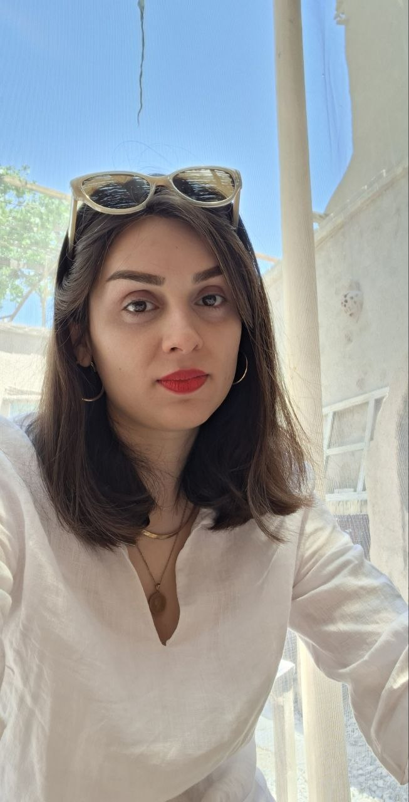

01
استراتژی و کشف محصول
نیازهای مشتری را به اهداف کسبوکار پیوند میدهم، اولویتها را مشخص میکنم و به شکلگیری خدمات جدید کمک میکنم تا مسیر تیم روشن باشد.
مدیر محصول · فینتک · هوش مصنوعی
شناخت انسانها.
محصولات هوشمند.
من الهام علیزاده هستم؛ مدیر محصول با 6+ سال تجربه در فینتک و بانکداری. با کمک داده، آزمایش و هوش مصنوعی، به تیمها کمک میکنم نیازهای مشتری را به محصولاتی کاربردی تبدیل کنند.

15M+ کاربر
محصولاتی برای نیازهای واقعی مردم
فینتک در مقیاس بزرگ
سادهسازی مسائل پیچیده
تجربهٔ کاربری با هوش مصنوعی
نوآوری کاربردی، تأثیر ملموس
01دربارهٔ من
من الهام علیزاده هستم؛ مدیر محصول با پیشینهای در فینتک، بانکداری و مهندسی صنایع.
مسیر حرفهای من در حوزهٔ بانکداری سازمانی در Rayan Pardaz Kavosh شروع شد؛ از همکار مالک محصول به مالک محصول رسیدم. سپس بهعنوان مدیر محصول به Ayan پیوستم و در ادامه، مدیر محصول شدم؛ با تمرکز بر خدمات پرداخت و استعلام برای کاربران در مقیاس بزرگ.
با کارشناسی ارشد مهندسی صنایع، مسائل پیچیده را با رویکردی ساختاریافته بررسی میکنم. به کشف محصول، طراحی تجربهٔ کاربری سنجیده و کاربردهای عملی هوش مصنوعی علاقهمندم؛ راهکارهایی که به مردم کمک میکنند نیازشان را پیدا کنند و کارهای روزمره را آسانتر انجام دهند.
دریافت رزومه02تخصصها
مهارتها و تخصصها · ارزشی که به تیم اضافه میکنم
نیازهای مشتری را به اهداف کسبوکار پیوند میدهم، اولویتها را مشخص میکنم و به شکلگیری خدمات جدید کمک میکنم تا مسیر تیم روشن باشد.
با استفاده از KPI و تست A/B، ایدهها را ارزیابی میکنم و نرخ تبدیل را بهبود میدهم. یک آزمایش در استراتژی درآمدزایی Ayan، نرخ تبدیل را 13% افزایش داد.
با تیم فنی برای بهبود جستوجو و مسیر کاربر همکاری میکنم و هوش مصنوعی را جایی به کار میگیرم که انجام کارها را برای مشتری سادهتر کند.
تیمهای محصول و فنی را از ایده تا عرضه همراه میکنم؛ از جمله در ساخت پلتفرم iOS شرکت Ayan با تیمی کوچک و چابک.
از نیاز مشتری شروع میکنم و مسیر کاربر را بررسی میکنم تا موانع را بشناسم، مسئله را روشن کنم و به شکلگیری خدمات کاربردی برسم.
ایدههای محصول و درآمدزایی را آزمایش میکنم، نتایج را مقایسه میکنم و آموختهها را در تصمیمهای بعدی محصول به کار میگیرم.
در محصولات مصرفی و راهکارهای بانکداری سازمانی تجربه دارم؛ از شناخت نیاز مشتری تا عرضهٔ خدمات در مقیاس بزرگ.
03دستاوردهای منتخب
در Ayan، با عرضهٔ قابلیتها و خدمات جدید به رشد تعداد کاربران از 8M به بیش از 15M کمک کردم. همچنین پلتفرم iOS را با تیم کوچکی از محصول و فنی راهاندازی کردم.
تمرکز من: استراتژی محصول، کشف خدمات و تحویل محصول.
8M → 15M+ کاربر
در Ayan، بهبودهای تجربهٔ کاربری مبتنی بر هوش مصنوعی را اجرا کردم که نرخ پرش را 20% کاهش و نرخ تکمیل فرایند را 32% افزایش داد. همچنین با همکاری تیم فنی، دقت جستوجو را از 45% به 83% رساندیم.
تمرکز من: تجربهٔ کاربری، آزمایش و همکاری با تیم فنی.
+32% نرخ تکمیل فرایند
04روش کار من
دربارهٔ آدمها، فرصتها و مسیر پیشرفت کنجکاوم. محصولات خوب از پرسشهای خوب شروع میشوند.
شناخت نیازهای مشتری و موانعی که در تجربههای روزمره با آنها روبهروست.
پیوند دادن نیازهای مشتری با اهداف کسبوکار و تعیین اولویتهای محصول.
استفاده از KPI و آزمایش برای فهمیدن اینکه چه چیزی تغییر کرده است.
استفاده از تست A/B و بهبود تجربهٔ کاربری برای بهتر کردن محصول.
همراه کردن تیمهای محصول و فنی، از شکلگیری ایده تا عرضه.
تماس
بهدنبال همکاری هستید که نیاز مشتری، اهداف کسبوکار و فناوری را به هم پیوند بدهد؟ دربارهٔ تیم شما و محصولی که میسازید گفتوگو کنیم.